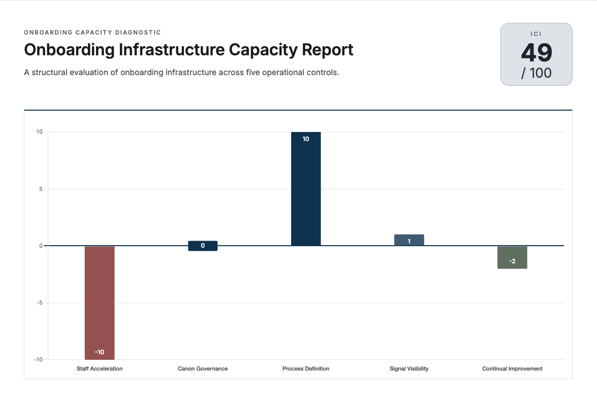

Sales is working. Growth is accelerating.
But onboarding still depends on workarounds,
heroics, and constant senior rescue.
That tension is useful signal.
It is fixable with better structure.
When revenue accelerates, onboarding carries the extra weight. The strain is common at this stage of growth.
Nothing has failed.
But nothing feels lighter.
If structure does not strengthen with growth, pressure stacks up fast.
View a sample onboarding capacity report
15 minutes. No obligation. Clear next steps.
You built a strong product. Sales is working.
You didn’t intend for onboarding to
become the bottleneck.
It doesn’t mean your team isn’t capable.
It means onboarding hasn’t been engineered for scale.
That’s why we built Plan → Do → Launch.
Proven in high-complexity, regulated environments
We built the onboarding infrastructure at an enterprise FinTech platform operating in a regulated environment — systems that institutional investors later cited as a key driver of their investment decision.
That work revealed a repeatable truth: onboarding fails structurally, not personally. The Five Controls model was built from those failures. OnboardingIQ was built to operationalize it.
Designed for mid-market SaaS companies where onboarding complexity is outpacing the infrastructure underneath it.
“We trusted him in week one more than we used to trust teams after a month.”

Example: PDL Onboarding Capacity Analysis
Growth brings more clients, more complexity, and more pressure. The question is whether your onboarding system can carry that load without cracking.
In 15 minutes, the PDL Onboarding Capacity Analysis shows whether your onboarding is Scalable, Functional, or Struggling across the Five Controls: Staff Acceleration, Canon Governance, Process Definition, Signal Visibility, and Continual Improvement.
You get a clear capacity score, a plain-English view of onboarding maturity, and a direct read on where renewal risk and delivery variability are likely to show up.
This is not a marketing quiz. It is an operating-level diagnostic.
If onboarding is already built like infrastructure, it will show.
If it still depends on individual
heroics or tribal knowledge, that will show too.
Run the analysis now so you can decide with facts before scale decides for you.
Measure your onboarding capacityGet your capacity score and see what's slowing growthBook a Strategic ConversationThree steps from structural risk to onboarding infrastructure that compounds with growth.
Straight answers about scaling SaaS onboarding without chaos.
Think of onboarding infrastructure as the system your team runs, not the heroics your team survives on. It includes clear stages, trusted knowledge, measurable adoption milestones, early risk visibility, and a repeatable improvement loop that scales with growth.
The PDL Onboarding Capacity Analysis scores performance across the Five Controls: Staff Acceleration, Canon Governance, Process Definition, Signal Visibility, and Continual Improvement. You get an ICI score that shows whether onboarding is scalable, functional, or under structural strain, plus exactly where the weak spots are.
As revenue grows, delivery complexity grows with it. Without clear systems, onboarding leans on a few experienced people, institutional memory gets fragmented, and leaders get pulled into avoidable escalations. Scale does not create those weaknesses, it reveals them.
No. AI amplifies structured systems but cannot replace human judgment, client relationships, or professional authority. AI works best when embedded into governed onboarding infrastructure.
Plan → Do → Launch specializes in high-complexity and regulated SaaS environments, including compliance, reporting, financial technology, and enterprise software.
Two paths follow. One increases strain. The other builds durability.
Onboarding continues to function, but growth increases variance and executive intervention.
Revenue acquisition remains strong. Revenue protection remains inconsistent.
Onboarding performs consistently under growth because structure carries the load.
Growth feels lighter. Scale strengthens the system instead of straining it.
Measure your onboarding capacity to see where structure is holding — and where reinforcement is required.
Measure your onboarding capacityGet your capacity score and see what's slowing growth